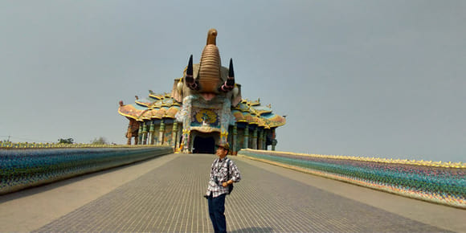
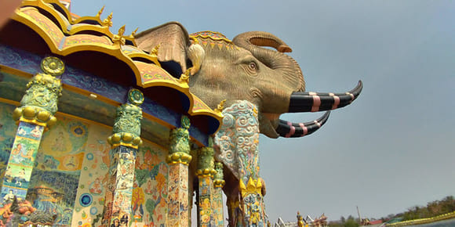
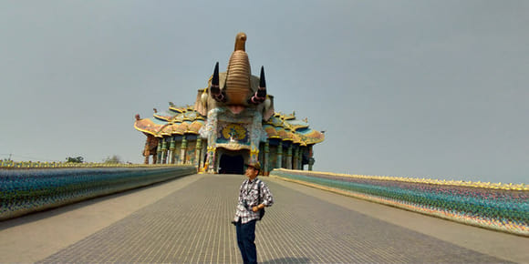
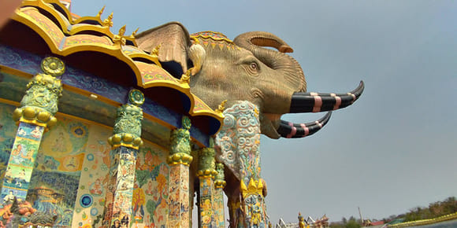

Thai Day 1
2020、1月22日 星期三
早上在荃灣飲早茶吃點心 HKD 90
午餐在機場M記 HKD 70
因為是午後4:25 飛，所以時間很充裕。
晚上8時到達曼谷機場辦妥入境手續，肚子已很餓，一面尋找好價的找換店，一面找食堂看看有什麼東西吃， 還是決定醫肚先，吃炒飯和炒果條，但份量太小，連我這小吃的也不夠，於是追加多一份炒飯和泰國可樂，整個晚餐用了200泰株。
在 shopping mall 的B樓層找到 SuperRich 找换店, 以3.86 价對换HKD2500 作初期消費用，最好價的時候是對4.00 的
在機場要乘地鐵再轉乘駕空鐵路才到達今晚所住的洒店。
Thai Day 2
2020、1月23日 星期四
今天坐車時間比較長， 對於我來說晚上才是今天的正題，去到Terminal 21 shopping mall同埋食晚飯, 有很多美食眼花繚亂， 最後選了海南雞飯配雞雜， 幫Alex選了烤魚+魚餅飯， 再加一份那渣麵線， 即係雜燴麵線! 飲品選購了百事可樂， 因為已經飽足，所以沒有再點芒果糯米飯作為甜品了! 飯後去window shopping， 之後去Big C 買桔子回酒店吃, 由於時間關係我哋在關門前15分鐘入去買桔子的，是日行程完畢。
Thai Day 3
2020、1月24日 星期五
早上是酒店供應的自助早餐，品種不算多但足夠享用一個豐富的早餐，粥粉麵飯麵包樣樣齊， 還有水果和沙律 ，於10時5分乘巴士往轉車站，轉乘雙條包車往景點，車程1.5 小時，景點雕塑金碧輝煌栩栩如生，Alex四週拍照，由於這景點其實是廟，我在周邊遊覽便是，沒有入廟，因為我是基督徒，於是我便找個陰涼處買支雪條消暑，手機上上網，在湖伴坐下來，有孔雀和小狗相伴，等他回來一起去吃午飯
 



由於要轉車的關係，要配合時間，所以午餐隨便吃了碗魚蛋米便算，轉車後返回上午的起點車站，又可以再去Pier21 來個下午茶，選了芒果糯米飯，炸雞翼，青檸汽水，百事可樂，我倆一齊分享。
Thai Day 4
2020、1月25日 星期六
今天是 農曆年初一
上午繼續自助早餐，今朝有白粥，有鹵水豆腐，豬腳鹵水蛋都是我喜愛的食物。
乘巴士约個半小時到古蹟景點遊，午餐吃美味Pizza, 有烤雞翼，有香腸蘑菇意粉，冰凍可樂，簡直大滿足!
這裏的商店很簡單，有家庭用品店，有五金舖，化妝品店，也有街頭小吃。
晚餐仍然是在Terminal 21食堂，因為食物美味價錢合理的平宜， 原本打算大吃一頓， 結果我倆只吃了海南雞飯，炒河粉加一碟雲吞，一個大可樂飲品便完了。 去到雞蛋仔檔，雞蛋仔已售罄!再去芒果糯米飯檔前也是售罄! 於是就是這樣完結了今天的晚餐。
回到酒店，幸好之前買的桔子還有存貨，於是拿了兩顆出來吃， 梳洗完聽下youtube之後瞓覺。
Thai Day 5
2020、1月26日 星期日
上午照常食自助早餐， 呢間酒店早餐主菜天天新款， 今天有青咖哩雞和肉丸粥，成為我的早餐主菜， 還有煎魚餅，沙律菜，三色水果也是必吃的。

之後在市內遊覽，有街市有廣場，都是平民化的生活，簡單而且休閒。
Thai Day 6
2020、1月27日 星期一
市内遊，有購物商場但不要和其他城市比較， 這裏的商場簡直是時光倒流四十年， 但因為價錢吸引我也買了六對襪共一百匹， 即時可以在這個旅程做替換， 可以把舊的襪掉去。
Thailand Day 7
2020、1月28日 星期二
如常吃酒店自助早餐， 這間比先前的酒店早餐品種比較少選擇， 味道上好足夠飽腹。
第一站去自然博物館， 由酒店乘的士前往只需60匹， 地方很大還有很多恐龍雕塑展示， 還有貝殼類爬蟲類展覽。

午餐是吃地道出名的燒雞，再加木瓜沙律，炒米線，飲可口可樂，真係绝配。
返回酒店拿行李(背包)，往火車站乘車住下一個旅遊點。
晚餐食地道小菜，魷魚飯，炒雞飯，炒雜菜， 飲可口可樂，夜宵還吃牛丸串，完成今天行程。
Thailand Day 8
2020、1月29日 星期三
清早5：30起身， 酒店代我們call車去荷花池， 坐木船睇日出和欣賞蓮花， 一條船又一位 船家開航， 我倆乘坐木船上觀賞和拍照，到第8天之遊，今天算是我最喜歡的一個節目， 雖然要很早起床，遊覽完荷花池才返酒店吃早餐， 早餐簡單而豐富， 這間旅店價錢便宜又舒適， 但店員不懂英語， 勝在現在的電子科技很發達可以用google translate， 成為我們溝通的橋樑
早餐後又要往下一個景點去了， 乘坐公共交通雙條車，只是80匹兩位，到達目的地下榻的另一間酒店， 這間酒店房間也很寬敞，乾淨舒適，冷氣空調熱水樣樣齊， 至到目前為止，所有酒店都有一個共通點，就是沒有護髮素供應， 我帶來備用的因為是很細支的， 所以已經不夠用了， 唯有在這裏再購買!其實 牙膏牙刷拖鞋等等，都很多間没有供應的，好彩有帶!
今天的午餐在shopping mall內選購了 海南雞飯， 什會炒米線 芒果糯米飯
到目前八天的旅遊當中，每一個點都一定有shopping mall，所以購物絕對冇困難，只是攜帶上有困難， 因為我們是只是用背包，沒有寄存行李的， 今次更加要預留空位買口罩，因為香港貨源短缺， 亦可以說全世界都大量需求口罩! 我也低估咗需求量與生產量的落差， 以為站站都有shopping mall，每道買啲都可以，點知…….
Thailand Day 9
2020、1月30日 星期四
早餐也是酒店供應自助的，除了一般都有供應粥品麵包、飯菜等等，這間竟然有燒米供應，水菓例牌有西瓜菠蘿。
食完早餐尚有些時間在區內遊，滿以為一路上都買不到口罩，打消這念頭，怎知行過一間賣快餐即棄的用品店，見老闆娘帶著口罩坐在店前，即時指示她的口罩表示想買，哈哈！竟然有小量貨，於是幫我的港友買了兩盒(每盒50個)，還選了幾個可以洗完再用的環保口罩，真是大收獲，但都是為好友而買的，真是口罩難求!成為今次旅遊最大使命!
晚餐吃豐富Pizza套餐, 有雞翼雞槌 雞肉pizza 蘑菇煙肉意粉，當然少不了可口可樂啦! 因為試過飲其他飲品發覺都是太甜， 所以最合適是飲可樂。
用完晚餐之後還去行Big C 和夜市, 沒有什麼特別可買的，也沒有所需的口罩賣! 行一會便回酒店休息， 聽聽youtube update香港的近況便沖涼睡覺。
Thailand Day 10
2020、1月31日 星期五
這間酒店是沒有供應早餐的， 所以我們行到車站附近， 才找到一間有肉片米粉加雞蛋， 每人吃了一碗便出發，坐雙條車去景點看荷花， 寫個景點荷花開得很少， 但環境很好，清風送爽，都不失為一個好景點， 如果有開滿花的就更美麗。
這裏湖邊也有餐廳， 有燒雞燒魚芬香撲鼻， 加上早上的早餐很細份， 更加引起我們的食慾大增!
晚上吃簡單的什錦湯河，燒魷魚4串，燒肉腸一串都是在夜市買的，這區沒有大型百貨公司，只有夜市但都很早收市的。
Thailand Day 11
2020、2月1日 星期六
在酒店附近遊河畔，午餐在河畔餐廳吃炒飯，因為其他東西不懂怎麼叫， 雖然食物簡單但環境清幽， 有度假的感覺。
晚上行夜市然後，在酒店附近餐廳吃晚飯， 同一個原因也是吃炒飯，飲可口可樂。 這裏的人應該是很早吃晚飯的， 因為昨晚六點半已經很多商店關門，餐廳關門了， 別無選擇下，只有在酒店斜對面的一間小餐廳吃晚飯。
Thailand Day 12
2020、2月2日 星期日
早上吃完早餐便乘車往下一站去， 今天的早餐是自助的，所以吃得飽一點。 首先坐篤篤去巴士站， 然後坐小巴到達我們今晚下榻的酒店入住， 車程是兩個多小時才到達， 我們到達總站才下車往酒店。
午餐在酒店附近一個大笪地式的地方， 同樣是吃炒飯，原因和之前的都一樣， 我懂的泰語就是炒飯兩份! 飲品同樣是可口可樂， 試過叫其他飲品結果都是覺得太甜， 所以在泰國飲的可樂是我們一年在香港都飲不到十分一的。
今天行程去了一個觀光塔， 入場費很便宜， 每人只需30匹，大约HKD8.00。 觀光塔四週 有一個小花園，但外圍是被住宅包圍著的， 有點兒不像觀光地點。
遊畢觀光塔之後便在附近行行，經過一間咖啡店便進內飲綠茶消消暑! 兩杯價錢合共100匹， 如果在香港飲要100元呢!
晚餐照樣是吃簡單的义燒蛋飯，我吃云吞麵，再加一碗淨云吞义燒，因為里檔有廣告圖片，所以指示要㸃這些食物，結帳是120匹。
Thailand Day 13
2020、2月3日 星期一
早上在酒店吃自助早餐， 行去車站準備搭雙條巴士， 但一滿座沒有上， 於是和篤篤車長議價，最後350匹包來回。
這個地質公園入場費外國人200匹，本地人20匹，相差甚遠! 我倆連同司機共付420匹入場費， 算是整個旅程最貴的入場費! 對於我來說只是看些怪石和要行一些暴曬的石地，地面 凹凸不平但很有層次，像在地球表面行走似的， 我倆邊行邊拍照， 行到有一個涼亭，我倆便坐下來稍作休息，吃隨身的小吃 ，Alex繼續向前行,我就在涼亭等他。
Thailand Day 14
2020、2月4日 星期二
今天大半天行程都是乘車轉車， 用完午餐之後，到達下榻的旅店， 在附近遊遊， 有園林有河景， 晚上在河上餐廳用餐， 辣椒炒魚 海鮮炒飯，炸雞槌， 共付450匹，是目前旅程最貴的一餐，不過味道很好是值得的。
Thailand Day 15
2020、2月5日 星期三
為了看日出，今早5㸃半起身，梳洗完馬上行動，昨天已探過路，所以很順利行到景點，沿著河邊前行，看著微弱嘅紅光漸漸升起，不久便見到圓圓的雞蛋黃升上來，到7時才行回旅館吃早餐。
今天的早餐雖然很簡單，但那碗泡飯粥很好味，每人吃了一碗， 再烘了兩片多士， 我沖了一杯奶茶，Alex 飲熱水， 這樣就完成了今天的早餐了!
行去附近的景點遊覽拍照，還在景點喝一杯綠茶珍珠奶茶， 雖然炎熱但飲完就很涼快!
再遊覽附近四週，一片鄉村房屋，大雞小雞隨處散步，公雞不時在啼， 隱約在清早五時起， 已經聽到雞啼聲， 母雞帶著一群小雞覓食， 這些農村景色，在市區生活的極不容易看到。
午餐往我倆昨天去過的那間餐廳吃， 因為價錢合理，食物好味，其實附近可以選擇的都差不多， 最重要是他們有圖片和英文menu， 就無須再吃例牌的炒飯了， 今天選了青咖哩魚飯，蝦仁炒河粉， 例牌的飲可口可樂， 因為其他飲品試過都覺得太甜， 始終都是飲可樂最配合進餐， 所以不論午餐或晚餐我倆都是飲可口可樂!
行了一段路，覺得很熱，便回旅館稍作休息， 打算早些吃晚飯同時觀賞日落， 於是往一間河上餐廳享用晚餐， 店內有一席客人打從午後便在哪裏飲酒談天，相信也是為了等看日落的， 正正我們也想提早吃晚飯，都是想看日落的景色， 我倆叫了一大條蒸鯛魚，一 個炒雜菜，和一碟炸雞翼， 兩瓶可口可樂， 今晚並沒有叫白飯， 因為條蒸魚實在很大， 啖啖都係肉， 又是一餐吃到飽飽的晚餐， 價錢只是540匹， 相當於港幣百多元， 這個價錢在香港只是吃個快餐店的晚飯而已， 在這裏不論食物和環境都一流!
其實在香港很難會五點鐘起身 也不會晚上五時吃晚飯看日落， 因為地方密集， 生活環境和時間都很難配合， 唯有在渡假的時候才有這種生活。
Thailand Day 16
2020、2月6日 星期四
酒店供應自助早餐， 乘車往下一站烏汶，這區很多美食， 我們選了一間烤雞餐廳，點了冬蔭公魚湯和一大隻烤雞，加一個白飯和特大可口可樂，是旅程到目前最豐富的一個午餐，只是约港幣80元，環境乾淨，食物美味，他們每張枱都用酒精清潔，洗手間亦很清潔，可以安心食用，結帳時會給客人核對帳單後才付款。
午飯後面在市內遊覽，Alex 觀光寺廟， 途中我在搜尋髮廊， 有些很簡陋的沒有冷氣，有冷氣的卻滿座，其中一間酒店附近的髮廊，我們經過的時候已經是晚上六點， 很困難地溝通到他們晚上八時關門，所以未能給我理髮，相約明早9時再來，怎料……
於是便找地方吃晚餐， 經過一間門口有燒烤檔和串燒檔，便問是否可以進店內吃的，他們表示可以，原來這餐廳的廚房就是在門外，餐廳內全部都是客人用餐的地方， 地方乾淨清潔， 選了兩個套餐， 一份是米粉加春捲 和洛神花飲品， 一份是米粉加串燒魚蛋和洛神花飲品， 呢杯飲品非常好飲而且又健康， 於是又吃得飽飽的返酒店休息!
每次途經任何地方都尋找機會買口罩，但這區每間都說沒貨了，更有貼出口罩NOT Sold out !
Thailand Day 17
2020、2月7日 星期五
今天在一間新的酒店吃自助早餐，豐富到不能盡試，只是吃其中一部份的食物已經飽飽了! 有飯又有小菜，有湯有飲品甜品，有水果沙律，有果汁…… 奶茶咖啡，麵包通通都有， 不過今天不吃麵包了!因為往後幾天都會有麵包早餐。
滿以為昨天找到那間髮廊，準時九點入店， 怎料店員表示理髮師今天不會到的，我又聽不懂他說什麼 gili gulu，我要求他打電話叫髮型師來，他表示不會來，還指示我去找別的理髮店! 於是行了好幾條街，問問週邊的人哪裏有理髮店，有位女士指示我向前走多幾十步便會有一間，結果找到了馬上與髮型師講我趕時間的，因為今天要上飛機，她說可以一小時內幫我理髮洗頭吹頭，費用350匹大概 差不多港元100元， 於是與Alex相約他去遊覽完，便回來這髮型屋找我， 於是我便留在這裏，果然一小時便完成了，我和髮型師在這裏拍照，然後在梳化等Alex回來, 之後他WhatsApp 我還要遲些，結果11時半才回來和我返酒店取行李，在酒店call Taxi 往機場去曼谷，這是内陸機，以往很小如此安排行程的，今次因為要去曼谷探親，Alex上次見已是三十多年前了！我也只在去年一次公司遊行在曼谷小聚，時光匆匆，不敢回望
提早到了機場，便在哪裏吃三文治和飲奶茶，因為别無選擇! 價錢约港元50, 接著上機，
約個半小時後到達曼谷，再轉乘地道舊式火車，oh !又熱又多人，多是外國遊客，竟然也會在某些站停留很久才開車! 莫非火車也會塞車， 熬了差不多兩小時才到達我們下榻旅館 的地區下車， 行十多分鐘便到達，放下行李 洗個面便出去吃晚飯， 曼谷夜市林立，商店林立，魚翅林立， 我們行了一圈，決定先食飯，後食魚翅， 我們選了一間餐廳吃烤魚炒菜和飲可樂，結帳是510匹，大約港幣百多元， 在這裏不算便宜了! 再找一間可以坐下來的魚翅檔吃了兩煲魚翅，每煲300匹，這個都是一般價錢。今天的總消費是目前旅程最貴的一天呵！
Thailand Day 18
2020、2月8日 星期六
今天早上八時由旅館供應早餐，雖然簡單但足夠，有麵包有香腸，有煎蛋，有沙律，有西瓜和橙汁，足夠吃飽肚。
步行去3号碼頭乘船去遊覽寺廟，建築很精美華麗，Alex 入寺內参觀和拍照，我在寺外圍觀光，側邊是湄公河，旁邊有小檔賣T-恤和各種纪念品，價錢大约100匹很便宜，但我沒有買，因為行李空間已被之前買的口罩和自用品佔滿了！而且曼谷已零口罩出售了。
午餐在Floating market 河邊餐廳叫了炸魚(Cat Fish)，蠔油炒蝦，青咖哩鮮蝦，兩個白飯和可口可樂，平時我不會吃一個飯的，因為青咖哩汁非常美味而且開胃，所以追加白飯。
遊畢河景便乘地鐵回旅館區，因為天氣實在太熱，我倆決定找coffee shop飲多冰凍綠茶消消暑先!取價每杯79匹，比起之前在鄉鎮飲的貴一倍呵！綠茶味還淡了些，怎麼都好，有個冷氣室坐吓歇吓都是好的。
Thailand Day 19
2020、2月9日 星期日
今天是旅程的尾聲了，明天便回程返香港了，目前香港人在搶購日常用品，連厠纸都是搶購項目之一，口罩更是一罩難求，還有些不法之徒在網上扮有貨，騙取金錢後便消失，太可恥了!反之，有些良心商人，當宣告開倉，大家都夜半去排隊輪候，唉！每晚都update 香港的情況，身在泰國心情真是有點兒在逃難中，這兒有得吃便吃好些了，返屋企不知要涯白粥清茶多久了！
天氣實在太熱了，今天的行程主要是行 shopping malls, Terminal 21, E, icon Siam.
午餐也在Food court，真正消署，我還選了我看吃的蠔仔煎蛋，Alex吃燒鴨飯，當然小不小可口可樂呢！另外最重要的購物項目就是口罩，竟然 shopping mall 有可以洗完再用的，看包裝是泰國製有標籤的，即時影相傳给香港的弟兄姊妹，價錢120匹，若買就即覆，馬上收到話要買，只係有小量現貨，便即時行返去賣口罩盡了義務了
午後回旅館稍作休息，沖個涼梳洗完再乘船去icon Siam, 今晚約了alex 在曼谷的表哥聚餐， 他們一家四口我們一同到餐廳食泰國菜，Alex 上次見表哥已是三十多年前了，而我在前年公司泰國的旅遊也有順道探望表哥，如果大家不是有 fb, 相隔這麽長時間，很難得到聯絡的，表哥一家都很親切和熱情，他說年紀大了，已不問政治，因為知又如何，都不能改變，做個愚民便算了
晚飯後在廣場看音樂噴泉水舞間，有雷射燈光很精彩! 而且是商場提供的節目之一，是免費欣賞的。
欣賞完畢已是八時半，表哥明天有他的工作，所以便在此告辭了，希望日後香港回覆正常，他們可以來港購物再相聚吧！互相祝福便回家了。
Thailand Day 20
2020、2月10日 星期一
由於好幾個碼頭都沒有開放 ,所以繼續去 IconSiam shopping， 其實可以買的都已買完，想買的口罩依然沒有， 就當在這裏消消暑涼吓冷氣，食下嘢打發時間準備回程到曼谷機場，有Apple Shop 是連接平台的可以觀望遠景拍拍照，場內亦有梳化可以坐低休息吓， 不一會就到兩點半了，便回旅館拿行李 出發鐵路往曼谷機場， 機場比往時已經較為小人， 過關後便在哪裏吃早晚餐， 選了軟殼蟹木瓜沙律，菠蘿炒飯，繼續可口可樂! 完成機場晚餐後便登機了， 返到香港機場已是晚上11時45分， 這次回程機上大部分座位都空空如也，可能是有部分旅客取消行程吧! 還趕及乘巴士回家，正式結束泰國20天的旅程!